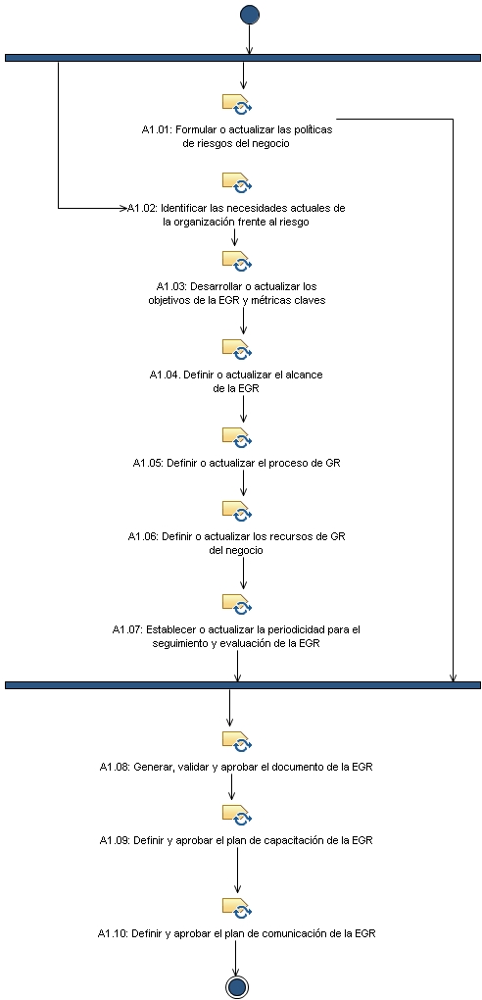
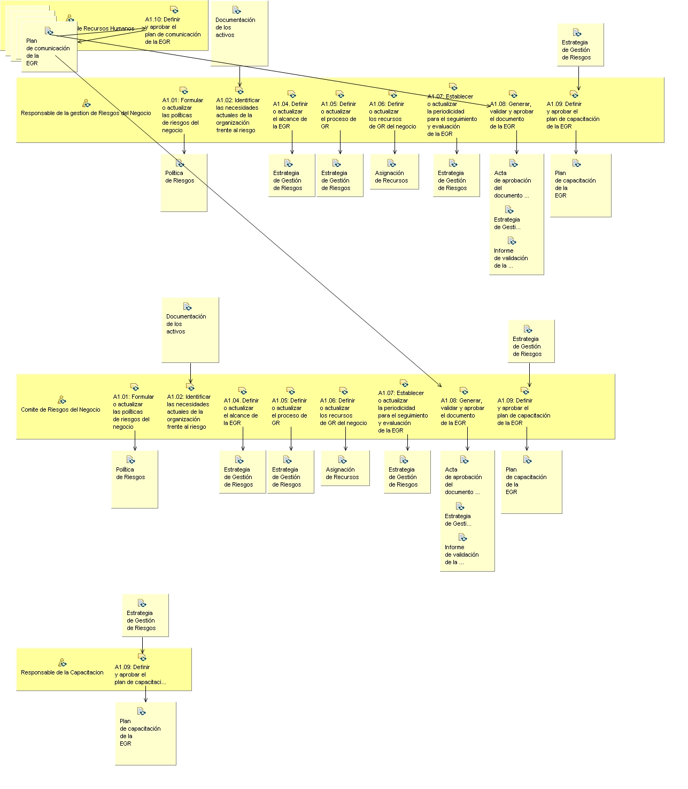

Patrón de posibilidad: A1. Planificacion de la estrategia de riesgos
Descripción
Estructura de desglose de trabajo
Asignación de equipos
Utilización del producto de trabajo
Flujo de trabajo


Anomalía del trabajo